S07 — Hum Sapne Kyun Dekhte Hain?
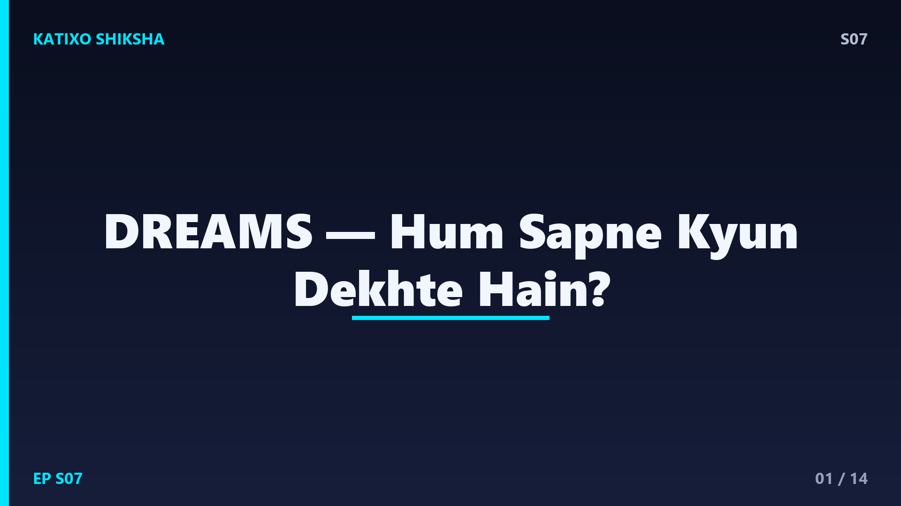
Slide 1दोस्तों, हर रात तुम एक secret movie theater में जाते हो — जहाँ तुम ही director हो, तुम ही actor, और कहानी कुछ भी हो सकती है! उड़ना, exam में पेन ढूँढना, या किसी अजीब जगह पहुँच जाना. हम इसे कहते हैं सपने, dreams. पर सवाल यह है — हमारा brain नींद में, जब आराम करना चाहिए, तब ये पूरी फ़िल्में क्यों बनाता है? आज Katixo Shiksha पर हम घुसेंगे dreams की दुनिया में — REM sleep, brain की activity, और memory की सफ़ाई. चलो शुरू करते हैं!
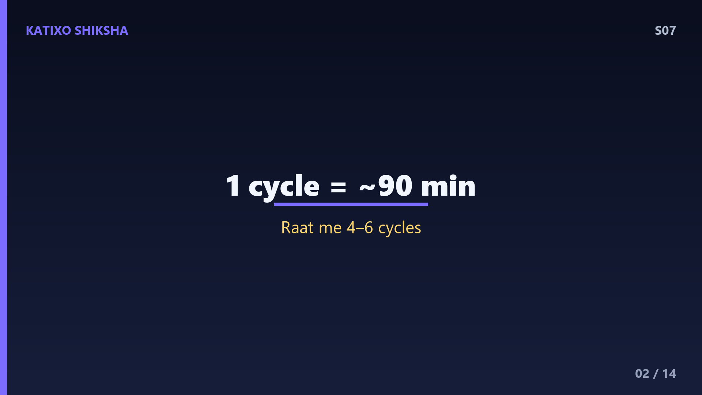
Slide 2पहले समझते हैं नींद के stages. नींद एक flat चीज़ नहीं, इसके कई stages होते हैं जो रातभर cycle में चलते हैं. मुख्यतः दो हिस्से — non-REM और REM. non-REM में deep, धीमी नींद आती है, शरीर repair होता है. फिर आता है REM यानी Rapid Eye Movement sleep — इस दौरान बंद पलकों के नीचे तुम्हारी आँखें तेज़ी से इधर-उधर घूमती हैं. यहीं सबसे vivid, रंगीन सपने आते हैं. एक पूरा sleep cycle करीब 90 minutes का होता है, और रातभर में हम 4 से 6 cycles पूरे करते हैं.
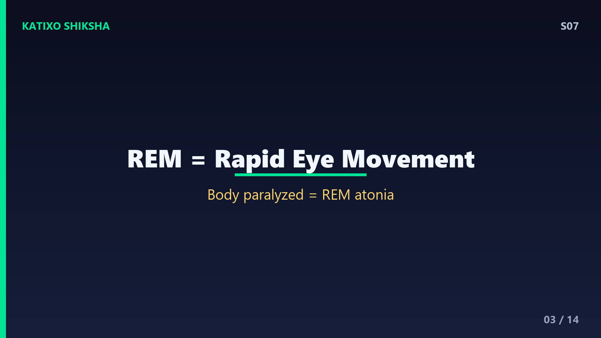
Slide 3REM sleep में एक हैरान करने वाली बात होती है दोस्तों. इस दौरान तुम्हारा brain लगभग उतना ही active रहता है जितना जागते समय! brain waves तेज़ हो जाती हैं, heartbeat बढ़ती है, साँस अनियमित होती है. पर साथ ही शरीर की muscles लगभग पूरी तरह paralyzed यानी सुन्न हो जाती हैं — इसे कहते हैं REM atonia. यह एक safety system है ताकि सपने में जो तुम कर रहे हो, उसे शरीर सच में न करने लगे! वरना सपने में दौड़ते हुए तुम बिस्तर से कूद पड़ते.
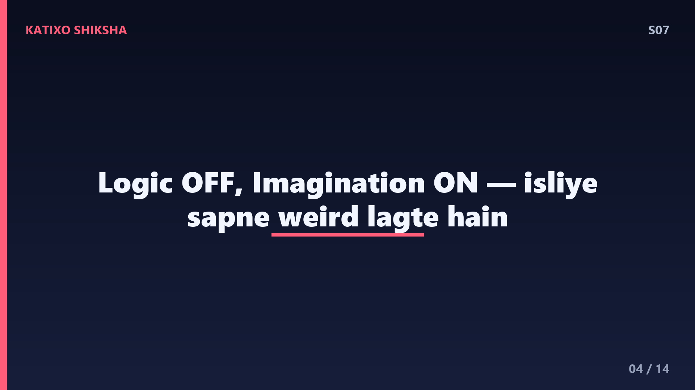
Slide 4अब सवाल — सपने आखिर बनते कैसे हैं? जब तुम REM में होते हो, brain के कई हिस्से अलग तरह से काम करते हैं. visual cortex, जो images बनाता है, बहुत active रहता है — इसीलिए सपने इतने तस्वीर जैसे लगते हैं. amygdala, जो emotions संभालता है, खासकर डर, भी active रहता है — तभी सपने भावनाओं से भरे होते हैं. पर prefrontal cortex, जो logic और reasoning करता है, थोड़ा शांत रहता है. यही वजह है कि सपनों में अजीब चीज़ें normal लगती हैं — उड़ना, या किसी मरे हुए person से बात करना!
Slide 5अब आते हैं असली सवाल पर — हम सपने देखते ही क्यों हैं? पहली बड़ी theory है memory consolidation. दिनभर तुम्हारा brain ढेर सारी जानकारी इकट्ठा करता है. नींद में, खासकर सपनों के दौरान, brain इस information को छाँटता है — ज़रूरी यादें long-term memory में store करता है, और बेकार चीज़ें हटा देता है. एक तरह से dreams तुम्हारे दिमाग की रात की सफ़ाई और filing system हैं. studies में पाया गया कि नई skill सीखने के बाद अच्छी नींद लेने से वो skill बेहतर याद रहती है.
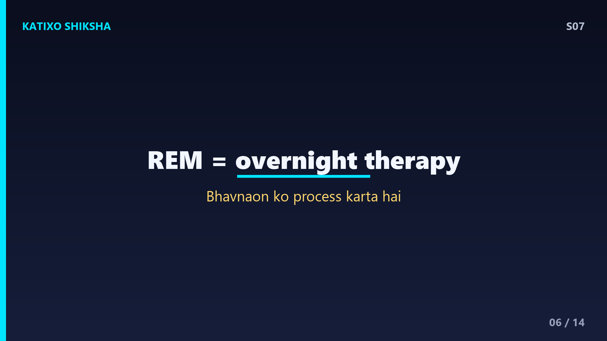
Slide 6दूसरी मशहूर theory है emotional processing — यानी भावनाओं को संभालना. दिनभर में जो stress, डर, खुशी या उलझन तुम महसूस करते हो, सपने उन्हें process करने में मदद करते हैं. कुछ scientists इसे कहते हैं overnight therapy — रातभर का इलाज. REM sleep के दौरान stress से जुड़े chemicals कम होते हैं, जिससे दिमाग मुश्किल यादों को थोड़ा शांत होकर दोबारा देख पाता है. इसीलिए लोग कहते हैं किसी मुश्किल पर सो जाओ, सुबह हल साफ़ दिखेगा — इसमें science का दम है!
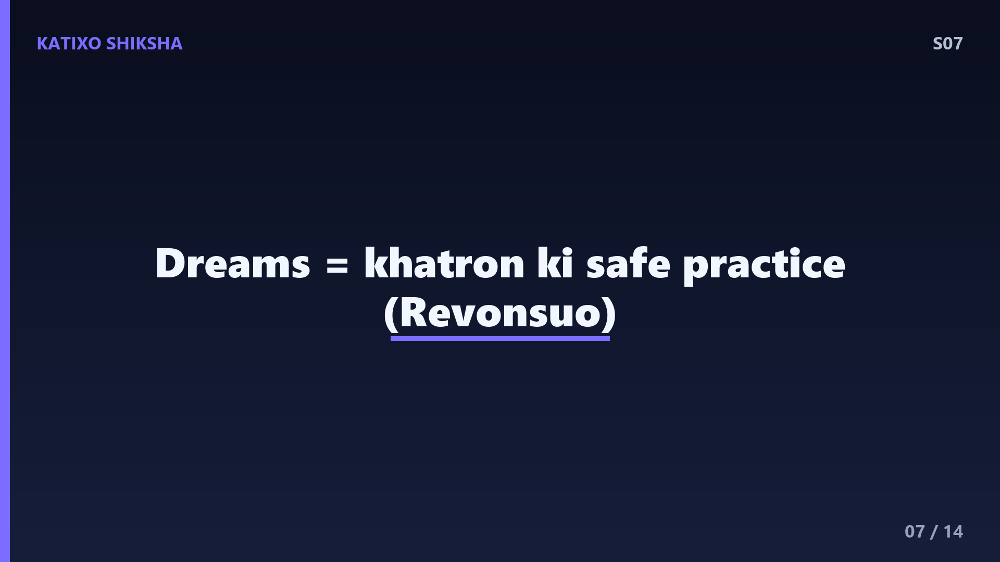
Slide 7तीसरी interesting theory है Threat Simulation Theory, जिसे Finnish scientist Antti Revonsuo ने दिया. इसके मुताबिक सपने एक तरह का safe practice ground हैं. कई सपनों में खतरा होता है — कोई पीछा कर रहा है, गिर रहे हो, भाग रहे हो. theory कहती है कि हमारे पूर्वजों के लिए सपनों में खतरों का अभ्यास करना survival के लिए फ़ायदेमंद था. यानी सपना एक virtual reality training की तरह — जहाँ बिना असली खतरे के तुम मुश्किल हालात से निपटना दिमाग में practice कर लेते हो.
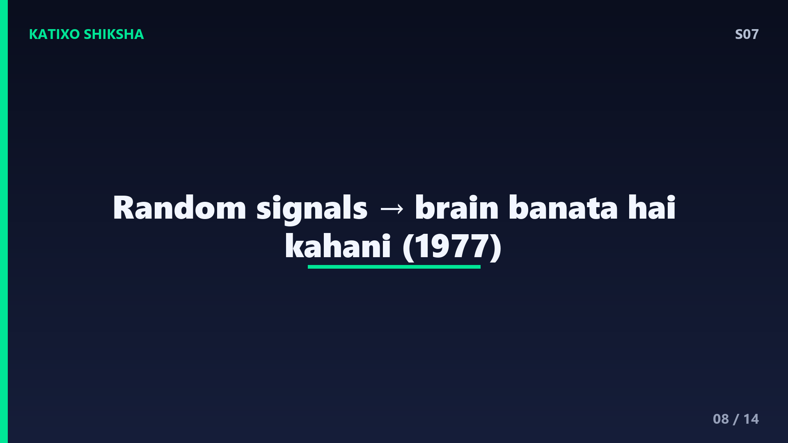
Slide 8एक और मशहूर idea है activation-synthesis theory, जो scientists Hobson और McCarley ने 1977 में दिया. इसके मुताबिक REM के दौरान brainstem से random signals निकलते हैं. तुम्हारा brain इन बेतरतीब signals को बेकार नहीं छोड़ता — वो इन्हें जोड़कर एक कहानी बना देता है, चाहे वो कितनी भी अजीब क्यों न हो. यानी सपनों की अजीब, टूटी-फूटी कहानियाँ शायद brain की कोशिश हैं random electrical activity को कोई meaning देने की. आज scientists मानते हैं कि सच इन सभी theories का mix है.
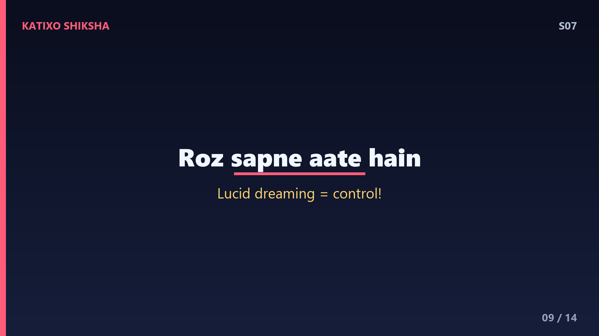
Slide 9कुछ मज़ेदार dream facts दोस्तों. एक — हम हर रात सपने देखते हैं, चाहे याद रहे या नहीं! ज़्यादातर सपने जागने के कुछ ही minutes में भूल जाते हैं. दो — सपने ज़्यादातर रंगीन होते हैं, पर black-and-TV युग में पले-बढ़े कुछ बुज़ुर्ग black-and-white सपने ज़्यादा बताते थे. तीन — जन्म से अंधे लोग आवाज़, छुअन और गंध वाले सपने देखते हैं. चार — एक खास अवस्था होती है lucid dreaming, जिसमें तुम्हें पता होता है कि तुम सपना देख रहे हो, और कभी-कभी उसे control भी कर सकते हो!
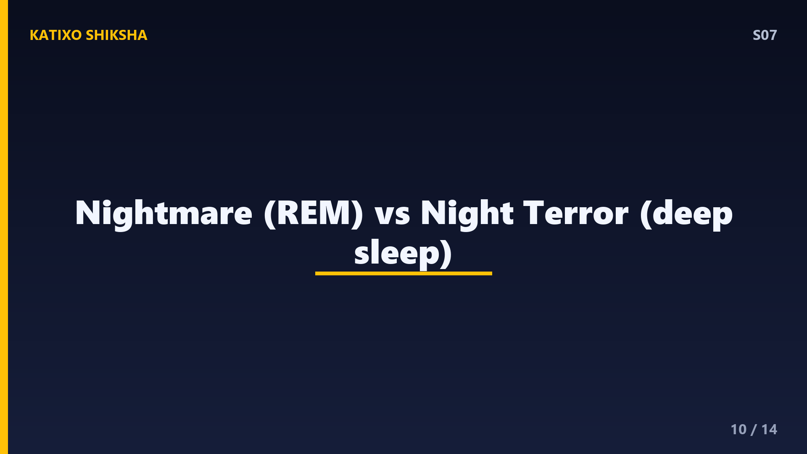
Slide 10अब nightmares यानी बुरे सपनों की बात. nightmares ज़्यादातर REM sleep में आते हैं और अक्सर stress, डर या नींद की कमी से जुड़े होते हैं. emotional processing theory के हिसाब से ये दिमाग का मुश्किल भावनाओं से जूझने का तरीका हो सकते हैं. एक अलग चीज़ है night terror, जो आमतौर पर बच्चों में deep non-REM sleep में होता है — इसमें बच्चा डरकर चीख सकता है पर बाद में कुछ याद नहीं रहता. nightmares से अलग, night terrors में आमतौर पर सपने की कहानी याद नहीं रहती.
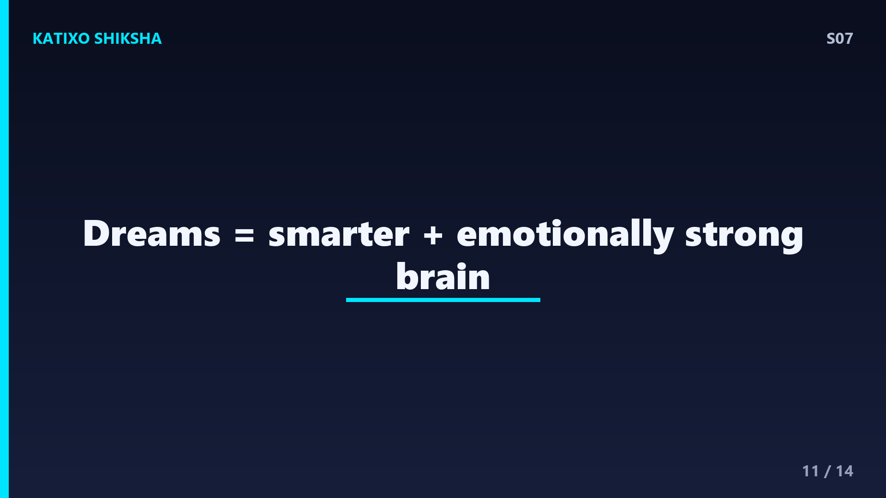
Slide 11तो dreams का असली फ़ायदा क्या? सब theories मिलकर एक तस्वीर बनाती हैं — सपने यूँ ही टाइमपास नहीं हैं. ये memory को मज़बूत करते हैं, emotions को संभालते हैं, creativity बढ़ाते हैं, और शायद खतरों से निपटने की mental practice भी कराते हैं. कई बड़े आविष्कार और कलाकृतियाँ सपनों से inspire हुईं — कुछ scientists और artists ने अपने ideas सपने में देखे! इसीलिए अच्छी नींद सिर्फ thakaan मिटाने के लिए नहीं — यह तुम्हारे दिमाग को smarter और भावनात्मक रूप से मज़बूत बनाने का भी ज़रिया है.
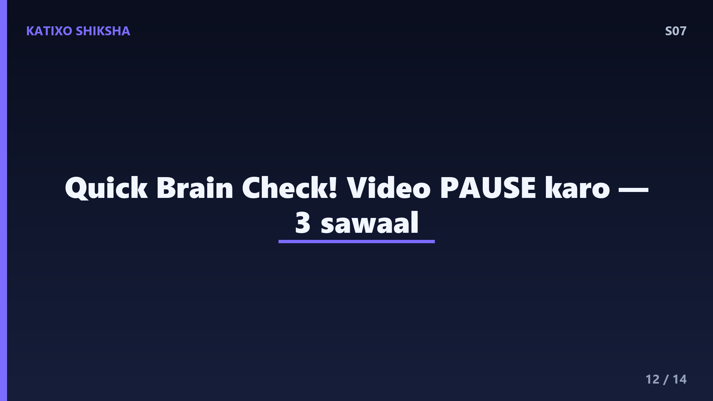
Slide 12Quick brain check! तीन सवाल, ज़रा सोचो. पहला — सबसे vivid सपने नींद के किस stage में आते हैं, और उसका पूरा नाम क्या है? दूसरा — REM sleep में muscles paralyzed यानी सुन्न क्यों हो जाती हैं, और इसे क्या कहते हैं? तीसरा — dreams की कोई दो theories बताओ जो समझाती हैं कि हम सपने क्यों देखते हैं. अभी video PAUSE करो, थोड़ा दिमाग लगाओ, खुद से जवाब दो. फिर अगली slide पर सही answers मिलेंगे. चलो, pause करो!
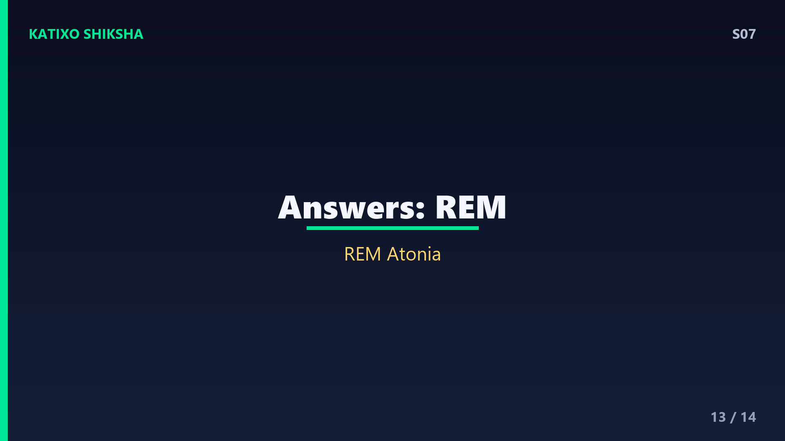
Slide 13जवाब देखते हैं दोस्तों! पहला — सबसे vivid सपने आते हैं REM sleep में, यानी Rapid Eye Movement sleep, जब brain जागते जैसा active रहता है. दूसरा — REM के दौरान muscles सुन्न हो जाती हैं ताकि तुम सपने को सच में न करने लगो, इसे कहते हैं REM atonia, एक safety system. तीसरा — कोई भी दो: memory consolidation यानी यादों को मज़बूत करना, emotional processing यानी भावनाओं को संभालना, threat simulation, या activation-synthesis. तीनों सही? बहुत बढ़िया, तुम्हारा सोता हुआ दिमाग अब भी काम कर रहा है!
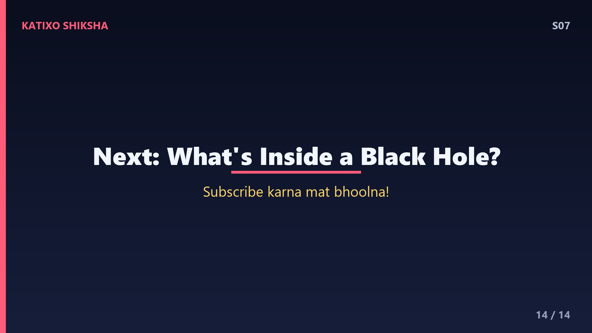
Slide 14तो समेटते हैं. नींद के stages होते हैं, और सबसे vivid सपने REM sleep में आते हैं, जब brain active रहता है पर शरीर सुन्न. हम सपने इसलिए देखते हैं क्योंकि brain यादों को छाँटता है, भावनाओं को process करता है, खतरों की mental practice कराता है, और random signals को कहानी में बदलता है. यानी dreams तुम्हारे दिमाग की रात की मेहनत हैं — तुम्हें smarter और मज़बूत बनाने वाली. अगला episode तो mind-blowing है — What Is Inside a Black Hole, यानी black hole के अंदर क्या होता है! Subscribe करना मत भूलना! Bye!